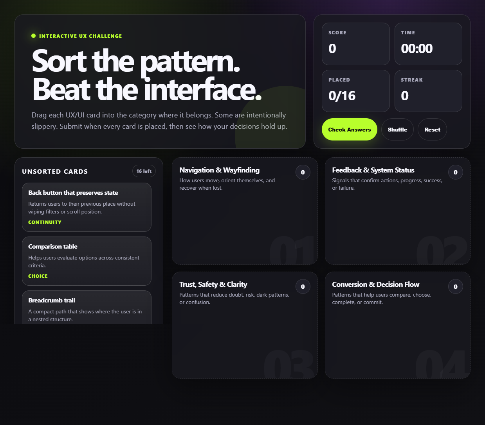
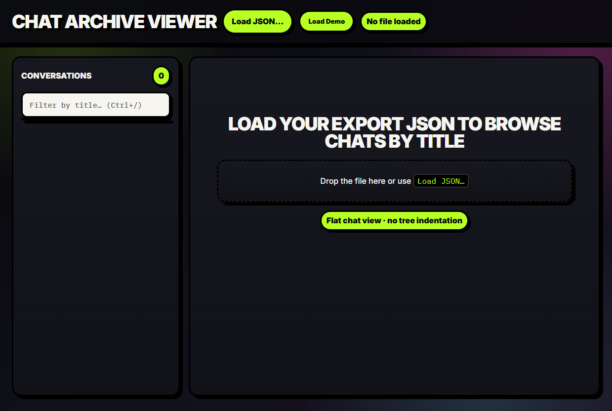
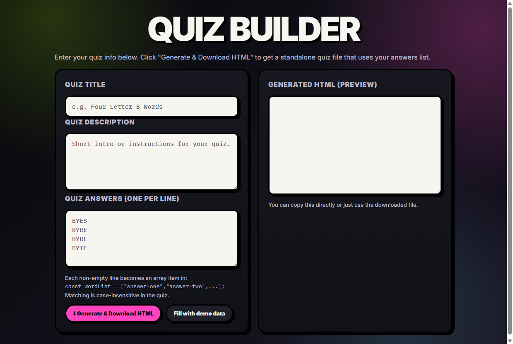
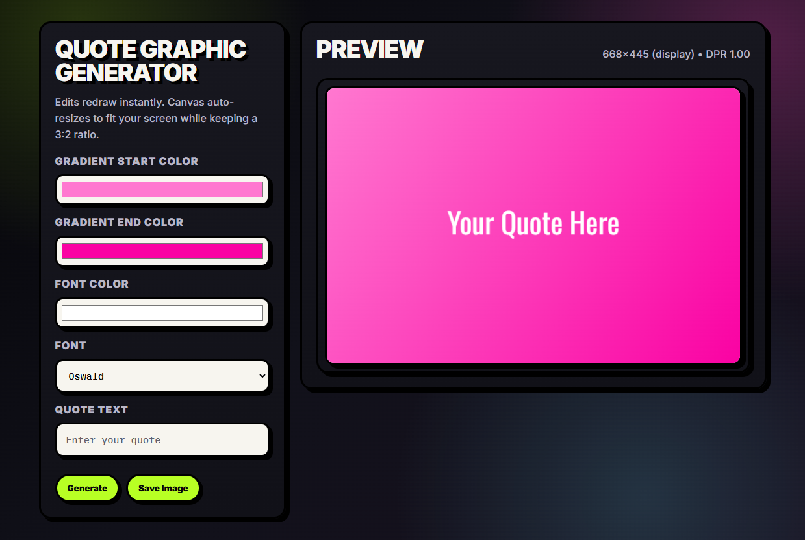
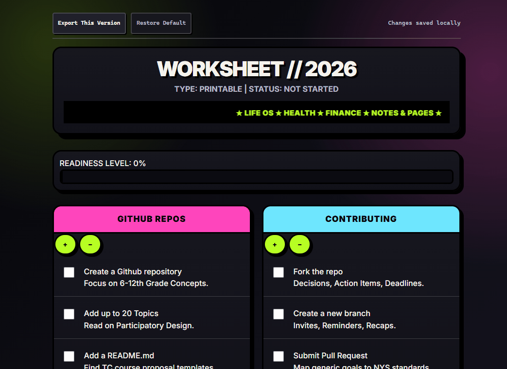

A collection of 26 neo-brutalist HTML templates you open offline in any browser — kanban boards, email viewers, quizzes, dashboards, and more. No framework lock-in. No subscription.
Template Features
Local-first persistence — changes are automatically saved in your browser using LocalStorage.
Export your customized versions — export allows you to download your modified version as a standalone HTML file with your edits preserved
Offline-friendly — all the templates can be used in the browser, even offline.
Included Templates
Calendar Template — monthly calendar with editable events, dynamic day controls, and a clean layout designed for planners, dashboards, and productivity tools.
UX Card Sorting Challenge — interactive drag-and-drop UX pattern sorting game with scoring, timers, streak tracking, and polished frontend game mechanics built entirely in vanilla JavaScript.

MBOX Viewer — sleek offline Gmail-style MBOX browser that parses real email exports locally with search, labels, attachments, mailbox filtering, and threaded message viewing.
Chat Archive Viewer — polished local ChatGPT export browser that loads conversation JSON files into a searchable flat-view interface with markdown rendering and fast navigation.

Quiz Builder — standalone quiz generator that instantly converts answer lists into downloadable HTML quiz games with progress tracking, validation, and interactive scoring.

Quote Graphic Generator — quote image creator with live canvas rendering, custom fonts, gradient backgrounds, and one-click export for social graphics and branding assets.

Worksheet Template — worksheet and productivity tracker featuring progress bars, checklist systems, editable tables, and dashboard-style organization panels.

Sticker Sheet Creator — import your favorite animated GIF stickers to create a sticker sheet.
Mindmap Creator — lightweight animated mindmapping tool that lets users create branching idea clusters
Please note that this product does not provide any guarantee of income or success. The results achieved by the product owner or any other individuals mentioned are not indicative of future success or earnings. This website is not affiliated with FaceBook or any of its associated entities. Once you navigate away from FaceBook, the responsibility for the content and its usage lies solely with the user. All content on this website, including but not limited to text, images, and multimedia, is protected by copyright law and the Digital Millennium Copyright Act. Unauthorized copying, duplication, modification, or theft, whether intentional or unintentional, is strictly prohibited. Violators will be prosecuted to the fullest extent of the law. We want to clarify that JVZoo serves as the retailer for the products featured on this site. JVZoo® is a registered trademark of BBC Systems Inc., a Florida corporation located at 1809 E. Broadway Street, Suite 125, Oviedo, FL 32765, USA, and is used with permission. The role of JVZoo as a retailer does not constitute an endorsement, approval, or review of these products or any claims, statements, or opinions used in their promotion.